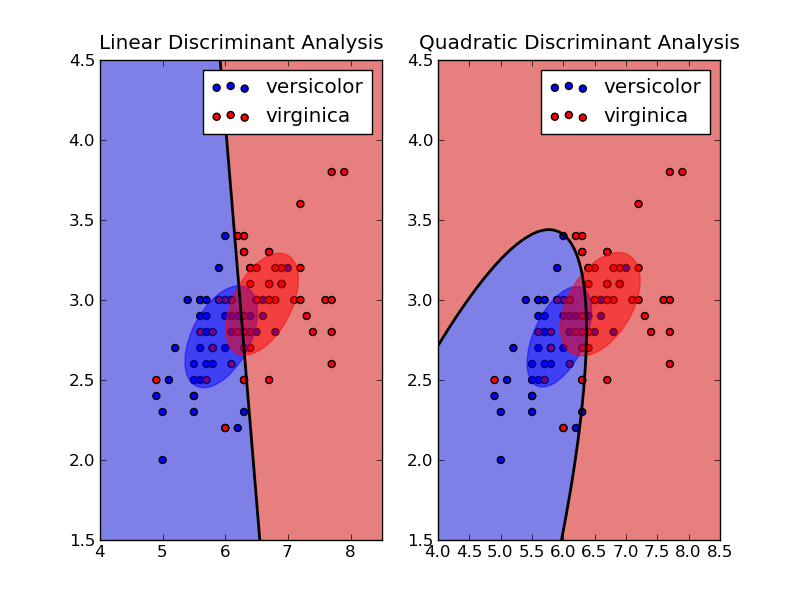

Linear and Quadratic Discriminant Analysis with confidence ellipsoid¶
Plot the confidence ellipsoids of each class and decision boundary

Python source code: plot_lda_vs_qda.py
print __doc__
from scipy import linalg
import numpy as np
import pylab as pl
import matplotlib as mpl
from scikits.learn.lda import LDA
from scikits.learn.qda import QDA
################################################################################
# load sample dataset
from scikits.learn.datasets import load_iris
iris = load_iris()
X = iris.data[:,:2] # Take only 2 dimensions
y = iris.target
X = X[y > 0]
y = y[y > 0]
y -= 1
target_names = iris.target_names[1:]
################################################################################
# LDA
lda = LDA()
y_pred = lda.fit(X, y, store_covariance=True).predict(X)
# QDA
qda = QDA()
y_pred = qda.fit(X, y, store_covariances=True).predict(X)
###############################################################################
# Plot results
def plot_ellipse(splot, mean, cov, color):
v, w = linalg.eigh(cov)
u = w[0] / linalg.norm(w[0])
angle = np.arctan(u[1]/u[0])
angle = 180 * angle / np.pi # convert to degrees
# filled gaussian at 2 standard deviation
ell = mpl.patches.Ellipse(mean, 2 * v[0] ** 0.5, 2 * v[1] ** 0.5,
180 + angle, color=color)
ell.set_clip_box(splot.bbox)
ell.set_alpha(0.5)
splot.add_artist(ell)
xx, yy = np.meshgrid(np.linspace(4, 8.5, 200), np.linspace(1.5, 4.5, 200))
X_grid = np.c_[xx.ravel(), yy.ravel()]
zz_lda = lda.predict_proba(X_grid)[:,1].reshape(xx.shape)
zz_qda = qda.predict_proba(X_grid)[:,1].reshape(xx.shape)
pl.figure()
splot = pl.subplot(1, 2, 1)
pl.contourf(xx, yy, zz_lda > 0.5, alpha=0.5)
pl.scatter(X[y==0,0], X[y==0,1], c='b', label=target_names[0])
pl.scatter(X[y==1,0], X[y==1,1], c='r', label=target_names[1])
pl.contour(xx, yy, zz_lda, [0.5], linewidths=2., colors='k')
plot_ellipse(splot, lda.means_[0], lda.covariance_, 'b')
plot_ellipse(splot, lda.means_[1], lda.covariance_, 'r')
pl.legend()
pl.axis('tight')
pl.title('Linear Discriminant Analysis')
splot = pl.subplot(1, 2, 2)
pl.contourf(xx, yy, zz_qda > 0.5, alpha=0.5)
pl.scatter(X[y==0,0], X[y==0,1], c='b', label=target_names[0])
pl.scatter(X[y==1,0], X[y==1,1], c='r', label=target_names[1])
pl.contour(xx, yy, zz_qda, [0.5], linewidths=2., colors='k')
plot_ellipse(splot, qda.means_[0], qda.covariances_[0], 'b')
plot_ellipse(splot, qda.means_[1], qda.covariances_[1], 'r')
pl.legend()
pl.axis('tight')
pl.title('Quadratic Discriminant Analysis')
pl.show()